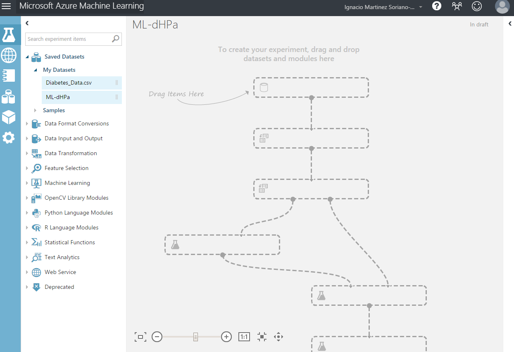
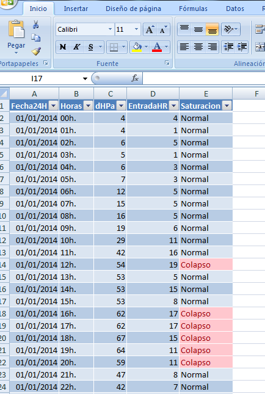
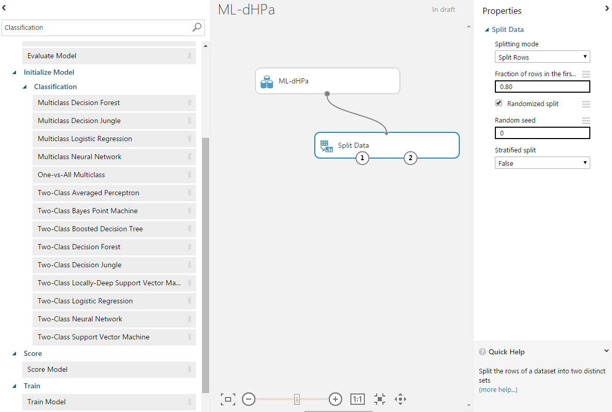
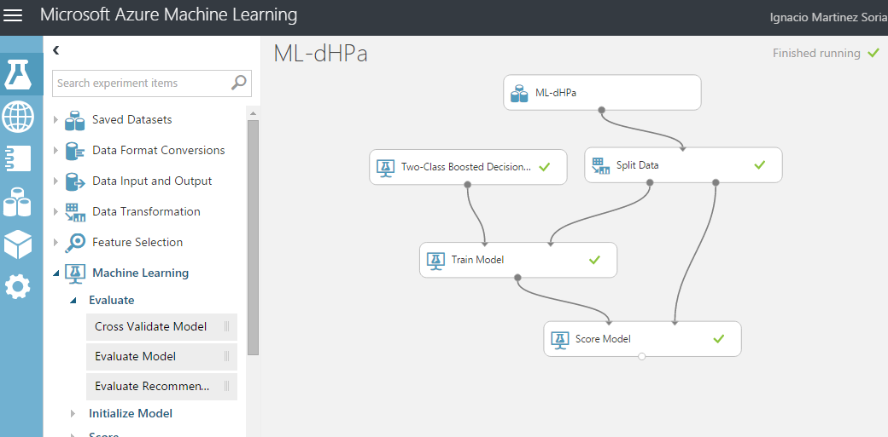
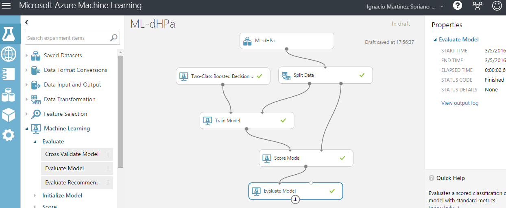
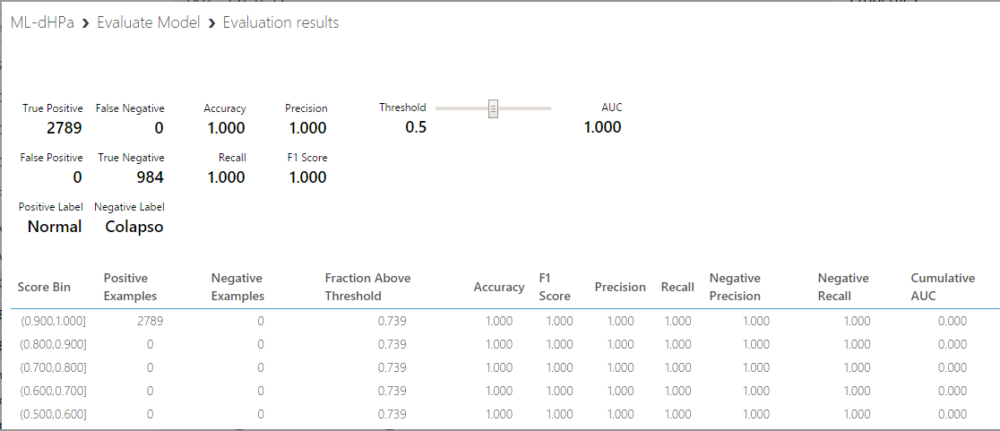

Machine Learning-DHPA. Predicción Inteligente de la Saturación Pacientes en Urgencias Hospitalarias
Creado por Ignacio.Martinez@carm.es / @coloratto67
En las Urgencias Hospitalarias, la acumulación de pacientes puede llevar a un estado de saturacion pudiendo provocar un "Valor Crítico" generando un colapso del servicio.
Queremos aplicar técnicas de I.A. en concreto, Machine Learning, para intentar predecir el grado de Saturación en Urgencias. Siempre que no ocurra alguna catástrofe.
Sistema de aprendizaje basado en la experiencia.
Se divide en dos categorias:
Dentro del Aprendizaje supervisado, vamos a utilizar un algoritmo de Clasificación
Sobre un conjunto de datos conocidos, predice una clasificacion o agrupación binaria (Crea dos grupos)
Permite clasificar en dos grupos, un conjunto de datos, según unos valores iniciales. Se utilizan unas caracteristicas, que identifican el valor de la agrupacion.
Para nuestro problema hemos identificado los siguientes valores:
Saturación
Crear el Data Set:
Data Set Inicial:
Preparar dos grupos del Data-Set. Uno para Entrenamiento 80% y otro para Evaluación 20%:
Elegir el Algoritmo de Clasificación Y Entrenamos.
Elegir módulo de Evaluación.
Valores del Módulo de evaluación.
